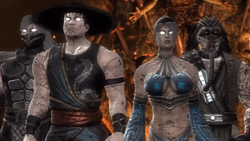

Вселенная Mortal Kombat
У игровой серии Mortal Kombat есть несколько особенностей, выделяющих её среди конкурентов в индустрии. Во-первых, вошедшая в поговорку жестокость. Как следует из названия, это смертельная битва — в ней кровь бьёт фонтаном, кости ломаются, а расправы проводятся предельно эффектно и брутально. Во-вторых, вселенная «Смертельной битвы» построена на разветвлённой мифологии, охватывающей несколько миров, что заставляет игроков ощущать вес каждого поражения. В-третьих, населяют эту вселенную колоритные персонажи, настолько любимые фанатами, что они возвращаются снова и снова — порой из могилы.
Завоюй их все!
Множеством игр и побочных продуктов игровая вселенная Mortal Kombat подробно описана прямо от сотворения мира. Когда-то в пустоте существовали только некая Единая Сущность и Старшие боги, энергией которых Сущность питалась. Тут явно прослеживаются параллели со скандинавской легендой о сотворении богами миров из убитого великана Имира: чтобы освободиться и выжить, Старшие боги вступили с Сущностью в битву, а после победы разделили её на части, из которых были созданы шесть миров, или царств.
Благостная цветущая Эдения, напоминающая христианский рай или Валинор Толкина с почти не стареющими жителями;
Внешний мир, неоднородная и состоящая из массы присоединённых подмиров империя с разнообразной и, как правило, недружелюбной географией. Леса с лицами на деревьях, суровые горы, озёра кислоты, которые можно увидеть в играх, — это всё из Внешнего мира. Населяют это царство многочисленные гуманоиды разной степени развитости. Многие из рас враждебны друг другу: например, шоканы и кентавры;
Царство Хаоса — когда-то обыкновенный безымянный мир, искажённый богами Хаоса; его жители утратили память, а сам мир — целостность. Географически представляет собой разрозненные фрагменты ландшафтов, объединённые порталами. Населяют этот мир враждующие племена хаотиков — выродившихся подобий людей, развитых физически, но агрессивных и неспособных к трезвой оценке событий. Хаотики поклоняются воде, считая её неконтролируемое течение священным;
Царство Порядка, или Сейдо, — антипод Царства Хаоса, предельно урбанизированный мир со сложной системой до бессмыслия строгих законов. Обитателям Сейдо уготована долгая жизнь и защита от многочисленных опасностей вселенной, но обеспечивается этот порядок тоталитарным режимом “стражников”;
Земное царство — знакомый нам голубой шарик. По всей видимости, крупнее Эдении, Царства Хаоса и Сейдо, но меньше Внешнего Мира. Лакомый кусочек для завоевателя, поскольку открывает путь к покорению других царств;
Преисподняя — аналог Ада, многоуровневое пристанище демонов и проклятых душ. Именно здесь обитают не-мёртвые ниндзя Скорпион и Нуб Сайбот. Когда падший Старший бог Шиннок объявил войну другим богам и был побеждён, его заключили в Преисподней. Однако Шинноку удалось захватить власть и превратить Преисподнюю в собственную базу и источник опасностей для остальных миров. Именно из-за Шиннока Старшие боги назначили Земному Царству защитника — младшего бога Рейдена.
Внешний мир всегда был самой серьёзной, централизованной угрозой остальным Царствам. Тысячи лет им правил Онага, Король Драконов, который начал объединять разрозненные территории в единую империю, чтобы в перспективе добиться слияния миров в один. Магия Онаги позволяла ему бесконечно воскрешать своих солдат, но бессмертие самого Короля обеспечить было некому, и его отравил собственный советник — некто Шао Кан.
Кан оказался менее способным правителем, чем Онага, и со сменой власти по всей империи стали вспыхивать бунты, которые Король Драконов подавлял бесконечной армией. Несмотря на это, именно Шао Кан впервые завоевал суверенное Царство, Эдению, победив в ритуальном турнире — Смертельной битве. Турнир был организован Старшими богами, стремившимися занять нейтральную позицию во вселенной, полной агрессивных завоевателей. По правилам Смертельной битвы, одно Царство может захватить другое только путём десяти побед в турнире подряд. Турниры должны проводиться раз в поколение.
Пересядь с иглы мужского одобрения!
Захватив Эдению, Шао Кан убил её правителя Джеррода, насильно взял в жены королеву Синдел и удочерил принцессу Китану. Синдел, не желая, чтобы Земное Царство постигла участь Эдении, принесла себя в жертву, создав магический барьер, не позволяющий Кану ступить на Землю. Китана при этом считала императора настоящим отцом и долгие годы не знала о причине смерти матери.
Шао Кан посчитал, что ограничения барьера Синдел можно преодолеть, если победить в Смертельной битве и присоединить Земное Царство к Внешнему Миру. Его бойцом стал рождённый на Земле похищающий души колдун Шан Цун, который сумел выиграть несколько состязаний, но наконец был побеждён земным чемпионом — Великим Кун Лао. Кун Лао, не стареющий благодаря победе в состязании, вернулся для участия в следующей битве, но Шан Цун привёл из Внешнего Мира четырёхрукого шокана Горо, который убил Кун Лао — и восьмерых следующих земных чемпионов.
Шоканы (не путать с самим Шао Каном) Горо, Шива и Кинтаро — естественные враги кентавра Мотаро. Кан предпочитал разделять и властвовать, играя на неприязни даже в рядах своих генералов
В следующей Смертельной битве Земное Царство представляла целая команда бойцов, среди которых были Соня Блейд, Джонни Кейдж и Лю Кэн. У каждого из них имелись свои причины попасть на турнир: боец спецназа Соня преследовала преступника Кано, а Джонни считал, что участие обеспечит ему хороший пиар. Только Лю Кэн, шаолиньский монах, с детства готовившийся к участию в состязании, понимал, насколько велика цена победы.
На том же турнире состоялся и знаменитый бой Саб-Зиро и Скорпиона, когда одержимый местью дух в желтом жестоко казнил криоманта, вырвав ему позвоночник. Чемпионом стал Лю Кэн, одолевший и Горо, и Шан Цуна, который с позором отступил. Чтобы избежать гнева императора, колдун сразу же предложил ему новый план: провести следующий турнир во Внешнем Мире и безотлагательно. В случае победы землян Шао Кан потерял бы право состязаться за это царство в Смертельной битве, поражение же отдавало Землю в руки пришельцев из Внешнего Мира. Предложение было подкреплено коротким, но разрушительным вторжением кинжалоруких таркатанцев, и Рейден принял условия.
В 90-е о сюжете Mortal Kombat можно было узнать не только из игр, фильмов и комиксов, но и из альбомов с наклейками, которые имелись почти у каждого мальчишки
На втором «финальном» турнире к сборной Земли присоединились Джексон Бриггс, он же Джакс, — вышестоящий офицер Сони, индейский шаман Ночной Волк, полицейский Кёртис Страйкер, Куай Лиэн — младший брат Саб-Зиро с прошлого турнира, и принцесса Китана, узнавшая правду о своих родителях. Подготовился и Шао Кан: предвидя предательство Китаны, он приказал Шан Цуну создать клон приёмной дочери, Милину. На турнире от Внешнего Мира сражался телекинетик Ермак — вместилище тысячи душ, а также роботизированные ниндзя из клана Лин Куэй Сектор и Сайракс. Лю Кэну удалось выиграть и это состязание, победив самого Шао Кана.
От смертельной битвы к войне за выживание
Казалось бы, здесь история должна была закончиться — Земное Царство победило, Шао Кан повержен, пришло время мира и покоя? Не тут-то было: поражение Шао Кана не обернулось его смертью. Турнир во Внешнем Мире оказался лишь звеном в длинной цепочке событий, за которым последовало возвращение из Преисподней Шиннока, воскрешение Онаги, гибель Лю Кэна и, наконец, исполнение пророчества об Армагеддоне. Пробудился огненный элементаль Блэйз, победа над которым давала безграничную мощь, и заполучил её Шао Кан. В финальной битве между императором и Рейденом бог грома проиграл. Последнее, что он успел перед смертью, — отправить самому себе в прошлое послание: «Он должен победить!»
Вместе с посланием появились видения обо всех ключевых событиях будущего. Рейден попытался повлиять на них, но ни к чему хорошему это не привело. Он предложил Скорпиону пощадить первого Саб-Зиро, Би-Хана, и пообещал в этом случае попросить у Старших богов помощи в возрождении истреблённого клана Сирай Рю. Скорпион почти согласился, но появился колдун Куан Чи и показал ему иллюзию убийства Саб-Зиро, его клана и семьи. История повторилась — Скорпион казнил Саб-Зиро. Бог грома предвидел, что киборгизация клана ниндзя Лин Куэй приведёт к их попаданию в руки Шао Кана, и попытался отговорить от участия в проекте Сайракса и спасти Смоука.
Смоука спасти получилось, но вместо него в киборга превратился Саб-Зиро-младший; не избежал этой участи и Сайракс. Рейден предположил, что вместо Лю Кэна в турнире должен победить кто-то другой — например, Кун Лао, потомок Великого Кун Лао, победителя Шан Цуна. Лао одолел Горо и Кинтаро, но не спасся от Шао Кана, свернувшего воину шею. Лю Кэн занял место товарища и одолел Шао Кана. Земное Царство вновь победило, но видения тёмного будущего не покинули Рейдена.
Тем временем Куан Чи предложил Шао Кану решение проблемы заклятия Синдел: он воскресил королеву Эдении на Земле и подчинил себе, тем самым отменив её смерть и сняв преграду. Колдун сыграл на алчности Шао Кана и убедил его вторгнуться в Земное Царство, даже не одержав победы в турнире. Орды монстров из Внешнего Мира напали на Землю, не готовую к масштабному вторжению. Погибли Ночной Волк, Смоук, Страйкер, Джакс, Куай Лин, Кабал, Китана, а их души попали в Преисподнюю, в рабство к Куан Чи. Рейден и Лю Кэн умоляли Старших богов вмешаться, но те отказались, ссылаясь на то, что запрещено лишь слияние миров без победы в Смертельной Битве: от вторжения же Земля должна отбиться сама.

Защитники Земли на службе Куан Чи. Не все из них смогли вырваться из Преисподней
Шао Кан ступил на Землю, и только тогда Рейден понял, что фраза «Он должен победить» относилась к самому императору Внешнего Мира — он должен был победить, чтобы Старшие боги остановили его. Бог грома попытался убедить в этом Лю Кэна, но земной чемпион, видя вокруг себя смерть и разрушение, решил, что Рейден спятил. Пытаясь не дать Лю сразиться с Каном, Рейден случайно убил друга молнией.
Высокая цена, однако, оказалась уплаченной не напрасно. Когда Шао Кан начал сливать Земное Царство с Внешним Миром, Старшие боги явились и уничтожили его. Таким образом Армагеддон, виденный Рейденом, был предотвращён, а сюжет большей части игр, выпущенных после Mortal Kombat Trilogy, утратил актуальность.
Зачем был нужен реткон «Смертельной битвы»? NetherRealm Studios хотели одновременно привлечь новых игроков, которым трудно было бы изучать сюжет всех предыдущих частей, и понимали, что для большинства Mortal Kombat — это первые три игры, Шао Кан, Лю Кэн и бой Скорпиона и Саб-Зиро. Поэтому в игре 2011 года нам предлагается повторить эти события, слегка меняя их. Персонажей, которые появились в Mortal Kombat 4 и позже, в последних играх всего несколько — Кэнси, Куан Чи, Фудзин, Таня.
Конец света был не единственным вариантом тёмного будущего. Поражение Шао Кана сыграло на руку Куан Чи и его повелителю Шинноку, которым не было дела до правил Смертельной битвы: они просто открыли порталы в Преисподнюю, откуда посыпались орды демонов.
Согласно концовке Коталь Кана в Mortal Kombat X, Рейден, завладев амулетом Шиннока, решил, что лучшая защита — нападение, и атаковал Внешний Мир. Коталь Кан обратился к Старшим Богам, и те постановили проводить Смертельную битву за независимость Внешнего Мира каждые десять лет
Параллельно Внешний Мир испытывал на себе последствия смерти абсолютного монарха: гражданскую войну, разруху и голод. Привыкшие к агрессивной внешней политике жители империи не были готовы к бедствиям, которые приносят междоусобицы, некоторые из них даже решили бежать в Земное Царство. Новый император, Коталь Кан, бывший советник наследницы Шао Кана Милины, не мог себе позволить вести и внешнюю, и внутреннюю войны, а потому заключил с Землёй перемирие.
Коталь — уроженец, когда-то присоединённого Шао Каном к Внешнему Миру царства Ош-Текк, который провёл некоторое время на Земле, среди индейцев Южной Америки. Во время войны Шиннока с Земным Царством Коталь предпочитал осторожно поддерживать землян, но несколько раз колебался и даже пытался заслужить милость падшего бога, напав на специальный отряд молодых земных воинов под руководством Кэсси Кейдж, дочери Сони Блэйд и Джонни Кейджа.
Новое поколение: Кун Дзин — духовный наследник воинов Шао Линя, Такэда — сын Кэнси, Кэсси Кейдж — дочь Джонни и Сони, Джеки Бриггс — дочь Джакса
Война Преисподней против Земного Царства привела к неожиданным последствиям помимо собственно победы над Шинноком: был восстановлен человеческий облик Скорпиона и младшего Саб-Зиро, их кланы возродились. Гибель Куан Чи освободила трон Преисподней, и заняли его не кто иные, как Лю Кэн и Китана. Рейден, впитавший в себя часть тёмной энергии Шиннока, чтобы очистить источник земной жизни Дзинсей, решил, что пора прекратить ждать нападения, лучше самому искать и уничтожать врагов Земного Царства. В качестве предупреждения он бросил к ногам новых повелителей Преисподней отрубленную голову Шиннока.
Лю Кэн и Китана: ты умираешь героем, а потом возвращаешься к жизни злодеем
Выбери свою судьбу
Само понятие «Смертельной битвы» как состязания за независимость одного мира от другого постепенно отошло на второй план, теперь это скорее война между альянсами фракций. Mortal Kombat X позволила игрокам вступить в группировки, не привязанные к конкретному царству, но предлагающие своим членам определенную идеологию и боевой стиль. Среди важных фракций мира Mortal Kombat можно назвать:
Лин Куэй
Клан ниндзя, использующий как магию, так и новые технологии. Традиционно членами Лин Куэй были криоманты — потомки выходцев из Внешнего Мира, способные управлять льдом, в том числе братья Саб-Зиро. Ко времени вторжения Шао Кана в Земное Царство члены клана подверглись принудительной киборгизации, самые известные киборги-ниндзя — Сектор и Сайракс. В классической версии событий киборгом становился ещё и Смоук, в новой хронологии его место занял Куай Лиэн, младший Саб-Зиро. После освобождения из Преисподней Куай Лиэн убил Сектора, возглавил клан и поклялся восстановить его честь, запятнанную предательством Земного Царства и участием в убийствах.
Сайракс, Саб-Зиро и Сектор до киборгизации. Пережить её сможет лишь один из них…
Сирай Рю
Клан-соперник Лин Куэй, основанный его бывшим членом. Колдун Куан Чи полностью уничтожил Сирай Рю, создав иллюзию, что в этом повинны Лин Куэй и старший Саб-Зиро. Этой иллюзией он питал Хандзо Хасаси, прозванного Скорпионом за боевой стиль, ненависть и жажду мести, которые вынудили его убить старшего Саб-Зиро. После возвращения человеческого облика Хасаси, как и Куай Лиэн, решил восстановить свой клан и поставить его на службу интересам Земного Царства. Одним из учеников Хандзо стал Такэда, сын слепого мечника Кэнси.
Скорпион никогда не гнушался убийств, но в глубине души всегда хотел воспитывать следующее поколение
Чёрный и Красный Драконы
Хотя преступная группировка Чёрный Дракон более известна (именно её представляет появившейся в первой игре серии Кано), когда-то она была лишь осколком более могущественной организации Красный Дракон. Основал клан Красного Дракона полубог Дэйгон, чтобы убить своего брата Тэйвена и обеспечить победу в битве с огненным элементалем Блэйзом. В организации действуют строгие порядки и даже своеобразный кодекс чести, что вызвало недовольство группы смутьянов, которые организовали свой клан наёмников, Чёрный Дракон. Интересы кланов схожи: наёмничество, создание оружия, контрабанда, операции на Земле и во Внешнем Мире и, конечно, полное уничтожение враждебных группировок, будь то земные Силы специального назначения или другой клан.
Иногда клан Чёрного Дракона может выручить в тяжёлой ситуации, но только если это выгодно ему самому
Силы специального назначения
Военизированная организация, созданная на основе спецназа США. Соня Блейд попала на Смертельную битву, преследуя военного преступника Кано. Путешествие во Внешний Мир вместе с Джаксом убедило её, что опасность, исходящую из других царств, нельзя недооценивать. Так было организовано Агентство по исследованию внешнего мира, куда вошли Кэнси и Сайракс. Агентство, в свою очередь, преобразовалось в Силы специального назначения, ответственные за всё Земное Царство, а не только Америку. В десятой игре ССН показаны как самая многочисленная и организованная сила землян.
Общество Белого Лотоса
Основанный Рейденом и шаолиньскими монахами орден, поставивший целью готовить лучших бойцов Земного Царства к участию в Смертельной битве. Несмотря на успехи таких адептов ордена, как Лю Кэн и Кун Лао, в условиях, когда победа в Смертельной битве больше не гарантирует свободу Земли от внешних угроз, необходимость существования ордена, готовящего кадры долго и «штучно», сомнительна.
Братство Тени
Культ Шиннока, организованный колдуном Куан Чи. До поры скрытное Братство исправно поставляло Шао Кану шпионов и убийц, главной же целью культа оставалось воскрешение падшего бога. После поражения Шиннока и гибели Куан Чи, пожалуй, самым могущественным членом Братства стал Нуб Сайбот.
Концовка Шиннока в Mortal Kombat X: объединив миры, Шиннок обратился против Старших богов и сумел снова слепить из кусочков Единую Сущность, что стало концом нашей реальности
Выжившие в Смертельной битве
За всю историю игр Mortal Kombat игрокам были доступны десятки разных бойцов, но несколько из них добились особой популярности, из-за чего продолжают раз за разом возвращаться на радость фанатам и вынуждают сценаристов придумывать всё более заковыристые причины их появления.
Скорпион
Безусловно, самый любимый и узнаваемый персонаж серии. Скорпион проделал путь от злодея через антигероя к положительному герою с тёмным прошлым, наподобие Росомахи. Ниндзя из клана Сирай Рю, Хандзо Хасаси был убит Би-Ханом, криомантом из клана Лин Куэй. В Преисподней душа Скорпиона оказалась невосприимчива к огню, что заинтересовало некроманта Куан Чи, который превратил его в одержимого местью призрака. Скорпион убил Саб-Зиро, которого считал повинным в гибели не только самого Хандзо, но и его семьи и клана. Много позже воину открылась правда: клан и семью Скорпиона уничтожил Куан-Чи. Ниндзя убил колдуна, и эта месть успокоила его сердце. Хандзо восстановил клан Сирай Рю и стал защитником Земного Царства.
Фирменная фраза Скорпиона «Get over here!» — один из двух главных мемов, подаренных Mortal Kombat мировой культуре. Другой — восклицание «Finish him!», произносимое Шао Каном после каждого боя
Саб-Зиро
Саб-Зиро почти так же популярен, как Скорпион, но многие до сих пор путают двух братьев. Пришло время прояснить всё раз и навсегда!
За первого Саб-Зиро, Би-Хана, можно поиграть в первой части MK и приквеле-ответвлении Mortal Kombat Mythologies: Sub-Zero. В Mythologies Лин Куэй получают заказ от таинственного колдуна Куан Чи найти древний амулет. Клан отправляет на задание Саб-Зиро, который в ходе поисков встречает Скорпиона, получившего то же задание, и убивает его. Криомант находит амулет и отдаёт его колдуну, но затем узнает от Рейдена, что в амулете — ключ к освобождению Шиннока. В преисподней Саб-Зиро участвует в битве с Шинноком и помогает предотвратить его возвращение. Во время событий первой части Mortal Kombat Би-Хана убивает ставший демоном Скорпион. Ниндзя-криоманта воскрешает тот же Куан Чи в виде бойца теней Нуба Сайбота (таким образом Куан Чи обманывает обоих воинов и получает в услужение двух могущественных призраков-ниндзя).
Второй Саб-Зиро, Куай Лиэн, тоже был криомантом и взял имя Саб-Зиро, чтобы почтить память брата. В оригинальной истории Куай Лиэн избежал киборгизации своего клана, в обновленной хронологии — стал киборгом, поборол свою программу, погиб, попал в Преисподнюю, был возрожден Куан-Чи в виде зомби, затем спасен Рейденом и вновь как человек Куай Лиэн стал грандмастером Лин Куэй. При первой встрече Нуба Сайбота и Саб-Зиро братья отказались от родства и вступили в бой. Победил Саб-Зиро.
Рейден
Бог грома и молнии, бессменный защитник Земного Царства. Любящий людей и готовый к самопожертвованию, Рейден во всем полагался на мудрость Старших богов, даже когда этого делать не стоило. Однако после победы над Шинноком Рейден впитал в себя часть его тёмной энергии и решил стать «атакующим защитником»: находить и уничтожать врагов Земли до того, как у них будет шанс нанести удар.
В веб-сериале Mortal Kombat Legacy, переосмысливающем биографии известных персонажей серии, Рейден показан как сумасшедший, который возомнил себя богом и попал в психушку. Ему даже делают лоботомию, но это не мешает активации божественных сил. Может, вот она — причина неудачных решений Рейдена?
Лю Кэн
Фактически главный герой первых четырёх игр серии, чемпион, сочетающий в себе черты Брюса Ли, Джета Ли и Джеки Чана. С 90-х популярность фильмов про кун-фу упала, уменьшилось и влияние Лю Кэна на сюжет. Пытаясь не дать исполниться своим мрачным видениям, Рейден случайно убил Лю. Душа воина отправилась в Преисподнюю, которой он стал править вместе с Китаной после гибели Куан Чи.
Шао Кан
Самый известный и, пожалуй, главный злодей серии, хоть он и уступает по силе Онаге и Шинноку. Могучий, коварный и совершенно безжалостный Шао Кан — злодей, с которым не хочется надолго расставаться, поэтому мы снова увидим его в грядущей MK11.
Пока неясно, кем будет Шао Кан в новой игре: активным участником событий или наблюдателем
Джонни Кейдж
Актёр, который попал на турнир для увеличения своей популярности, а остался, потому что обнаружил внутри себя великую силу и почувствовал великую ответственность. После смерти Лю Кэна Рейден выбрал его новым чемпионом Земли. Старается раздавать тумаки, быть хорошим мужем для Сони и отцом для Кэсси, а в довесок ещё успевает шутить. Вроде бы получается.
Соня Блейд
Военный до мозга костей. Для Сони долг превыше всего — даже собственной жизни и счастья близких. Соня попала на турнир из-за Кано, и их вражда превосходит по накалу даже противостояние Саб-Зиро и Скорпиона, которые, в общем, решили свои разногласия. Вскоре после победы над Шао Каном вышла за Джонни Кейджа замуж, но даже рождение дочери не смогло поколебить приверженности Сони служебному долгу. Кэсси Кейдж тоже вошла в состав Сил специального назначения, но Соня относится к ней в первую очередь как к солдату.
Шан Цун и Куан Чи
Два самых известных колдуна-манипулятора вселенной MK. Некромант Куан Чи оживляет мертвецов для службы себе, Шан Цун же предпочитает поглощать их души и силы. В игре Deadly Alliance колдуны объединялись и даже сумели уничтожить Шао Кана и Лю Кэна, но взаимное недоверие поставило крест на их сотрудничестве.
Рептилия, Ермак и Рейн
Когда-то персонажей было легко создавать: возьми готовый рендер, замени цвет на палитре и придумай броское имя. Однако со временем каждый из разноцветных ниндзя обрел индивидуальность, собственную историю и судьбу.
Рептилия, зелёный ниндзя, которого в первых играх не отличить от Саб-Зиро и Скорпиона, в дальнейшем подвергся радикальному редизайну. Он представитель почти исчезнувшей расы затерранцев, который пошел на службу Шао Кану в надежде, что тот сможет оживить его родичей.
Ермак — продукт магии Шао Кана, вместилище роя душ, порабощённых императором Внешнего Мира. В игре Deception Ермак стал положительным персонажем, ищущим искупления за преступления, совершенные на службе Шао Кану, но после ребута его снова сделали миньоном императора. Ермак предан трону, а не личности — он стал одним из верных бойцов Коталь Кана после свержения Милины.
Ермак появился благодаря игрокам. Фанаты нашли в первой игре серии диагностическое меню с надписью ERMACS и предположили, что есть секретный персонаж Ермак, которого можно открыть. Разработчики опровергали слухи, но затем сдались и поместили красного ниндзя с таким именем в Ultimate Mortal Kombat 3. Другой популярный миф, ставший реальностью: якобы на арене с деревьями-лицами можно провести фаталити, скормив оппонента дереву. В игре 2011 года это действительно можно сделать.
Рейн — наименее популярный из всех персонажей-ниндзя, но всё же достоин упоминания. Воин в фиолетовом — наследник эденийского бога Аргуса, коварный и жадный до власти маг погоды. Его амбиции простираются столь далеко, что в своей концовке девятой части Mortal Kombat после победы над Шао Каном Рейн решает сам править всеми царствами и начать завоевания намерен с Земли.
Миром «Смертельной битвы» правят персонажи — история всегда перестраивается таким образом, чтобы выпустить на арену любимцев публики и дать им впечатляющие новые способности. Но это отнюдь не плохо — ради создания (или возвращения) уникальных персонажей и их большего раскрытия авторы рисуют широкими мазками любопытную вселенную, полную древних богов, практически бессмертных героев и насилия.
Это архаичный мир, соединивший в себе элементы технологического боевика, тёмного фэнтези и хронофантастики. Перед нами редкий пример, когда ребут или реткон пошел вселенной на пользу, чтобы переиграть множество странных сюжетных поворотов и на их месте построить что-то ещё более захватывающее. Вот-вот выйдет новая игра серии, и, надеюсь, в ней найдется место и старичкам, и новым героям — крутым, неоднозначным и опасным. Как мы любим.
{kind=link}
{kind=link}
{kind=link}

{kind=link}
{kind=link}